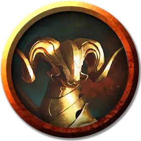

Сверкающий олень
Burnished Hart
Средний Конструкт, без мировоззрения

Класс Доспеха 14 (природный доспех)
Хиты 45 (6к8 + 18)
Скорость 50 футов
| мод | спас | ||
|---|---|---|---|
| СИЛ | 17 | +3 | +3 |
| ЛОВ | 14 | +2 | +2 |
| ТЕЛ | 16 | +3 | +3 |
| мод | спас | ||
|---|---|---|---|
| ИНТ | 3 | −4 | −4 |
| МДР | 15 | +2 | +2 |
| ХАР | 1 | −5 | −5 |
Иммунитет к урону огонь, яд
Иммунитет к состояниям истощение, окаменение, отравление, очарование, паралич
Чувства тёмное зрение 120 футов, пассивное Восприятие 12
Языки понимает один язык своего создателя, но не говорит
Опасность 2 (450 опыта)
Бонус мастерства +2
Особенности
Атака в броске. Если олень переместится как минимум на 20 футов по прямой к цели, а затем в том же ходу попадет по ней атакой рогами, цель дополнительно получает от атаки 7 (2к6) урона огнём. Если цель — существо, она должна преуспеть в спасброске Силы Сл 13, иначе будет сбита с ног.
Нагретое тело. Существо, которое касается оленя или попадает по нему рукопашной атакой, находясь в пределах 5 футов от него, получает 5 (1к10) урона огнём.
Устойчивый. Олень совершает с преимуществом спасброски Силы и Ловкости против эффектов, сбивающих его с ног.
Действия
Мультиатака. Олень совершает две атаки: одну Рогами, а другую Копытами.
Оленьи рога. Рукопашная атака оружием: +5 к попаданию, досягаемость 5 футов, одна цель. Попадание: 7 (1к8 + 3) колющего урона.
Копыта. Рукопашная атака оружием: +5 к попаданию, досягаемость 5 футов, одна цель. Попадание: 5 (1к4 + 3) дробящего урона плюс 2 (1к4) урона огнём.
Описание
Среди первых кованых, выкованных Пирфором, элегантные сверкающие олени бродят по миру смертных в поисках новых достопримечательностей, которые можно вернуть богу кузницы. В каждом путешествии с горы Велус, где находится кузница Пирфора, они отправляются в дальние уголки мира, чтобы увидеть красоту во всех ее проявлениях, а затем воссоединиться со своим создателем, их умы наполнены рассказами о том, как продолжает развиваться великолепие жизни.
Кованые
Первые кованые были созданы богом кузницы Пирфором. Он передал секрет вдыхания жизни в этих металлических существ своим самым преданным последователям, чтобы они могли подражать его работам и изобретать новые формы в своих собственных кузницах.
Некоторые кованые являются бдительными стражами святых мест, другие служат фамильярами и посланниками, а некоторые были созданы, чтобы подражать красоте, свойственной животным мира смертных. Каждый проявляет особенности, соответствующие его роли, а некоторые ведут себя как дружелюбные существа или стоические стражи.
Несколько чрезвычайно редких и ценных кованых были изготовлены рукой самого Пирфора. Некоторые из этих великолепных творений теперь являются семейными реликвиями монархов; другие затеряны в песках времени или охраняются древними монстрами.